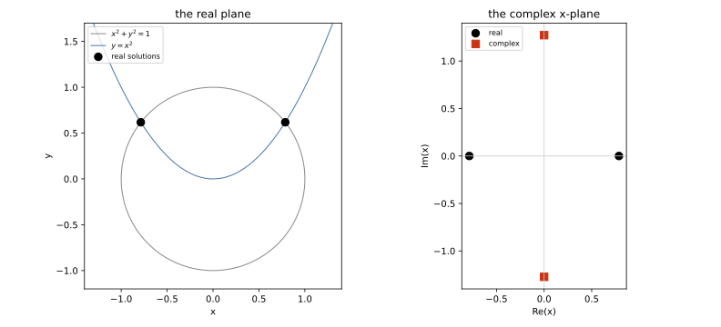
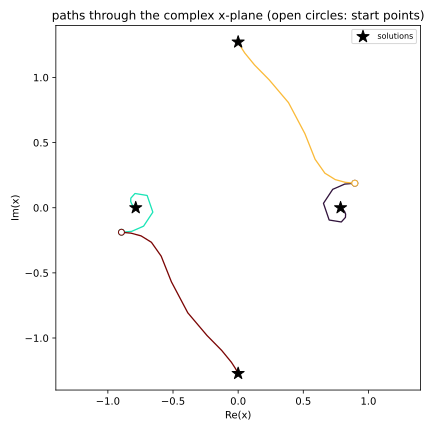

📈 Plotting solutions and paths¶
Solutions from the adaptive precision tracker and associated algorithms (the default) come back as multiprecision numbers, and multiprecision numbers are not float64. A screen resolves about three digits, so drawing has to drop the rest somewhere – this page is about where that happens, what you can hand straight to a plotting library, and the a bit about what Bertini cannot draw.
Most of it is short: real_mp data goes onto a matplotlib axis like any other number.
Complex data does not, and the reason is worth reading before you plot your first solve.
Note
⚠️‼️⛔️☢️☣️🚨
Silviana notes up front an upstream limitation in Numpy that causes serious problems with
the extended precision complex type bertini.complex_mp: numpy.imag and numpy.real
PRODUCE WRONG VALUES for custom complex types. I’m working on this, but I cannot fix it
from b2. It MUST be fixed in numpy.
Todo
Fix this part of the tutorial when numpy fixes this bug.
Solving¶
The unit circle meets the parabola \(y = x^2\) in four points: two real, and a conjugate pair with \(x\) purely imaginary.
import bertini
from bertini import ZeroDimSolver, SolutionPathCollector
bertini.recording(False) # so the solve really tracks, rather than recalling
bertini.random.set_random_seed(2)
x, y = bertini.Variable('x'), bertini.Variable('y')
system = bertini.System()
system.add_variable_group(bertini.VariableGroup([x, y]))
system.add_function(x*x + y*y - 1)
system.add_function(y - x*x)
solver = ZeroDimSolver(system, mptype='adaptive')
paths = SolutionPathCollector()
solver.add_observer(paths)
solver.solve()
solutions = solver.all_solutions()
assert len(solutions) == 4
Real data needs nothing¶
real_mp converts to a float, and importing bertini registers a converter with
matplotlib for the calls that compute against plain floats before they draw. So all of
this works on multiprecision arrays and on plain lists of them, with no conversion of your
own:
import matplotlib.pyplot as plt
from bertini.multiprec import real_mp
values = np.array([real_mp(k) / real_mp(7) for k in range(1, 20)])
fig, ax = plt.subplots()
ax.plot(values, values*values)
ax.scatter(values, values*values, c=values)
ax.hist(values) # needs the converter
ax.bar(values, values, width=0.01) # needs the converter
ax.axvline(values[0])
ax.set_xlim(values[0], values[-1])
plt.close(fig)
The values themselves are untouched; only what goes to the axis becomes float64.
Complex data is refused¶
⚠️‼️⛔️☢️☣️🚨 numpy’s .real and .imag are wired to its own three complex types. On an array of
any other complex dtype – complex_mp included – .real hands back the array
itself and .imag hands back zeros, with no error and no warning. At the time
of this writing (Fall 2026), there is no
hook for a user dtype to correct that.
So the spelling every numpy user reaches for would draw a picture that is wrong rather than one that is missing:
xs = np.array([solution[0] for solution in solutions])
try:
plt.scatter(xs.real, xs.imag) # would put every point on the x axis
except TypeError as refused:
print(str(refused).split('.')[0])
a multiprecision complex value cannot be an axis coordinate
Complex values are turned away at the axis for exactly this reason: the wrong spelling
cannot silently succeed. Take the parts explicitly instead, with
bertini.real() and bertini.imag(), which are correct for every mp container:
fig, ax = plt.subplots()
ax.scatter(bertini.real(xs), bertini.imag(xs))
ax.set_xlabel('Re(x)'); ax.set_ylabel('Im(x)')
plt.show()
Solutions from bertini.solve() are a little friendlier: a
Solution overrides .real and .imag itself, so on one of
those the usual spelling is correct and is allowed through. The refusal is for plain
arrays, which is what you get from all_solutions(), from np.array([...]), and from
any slicing that drops the subclass.

The real plane, and the complex \(x\)-plane. The two real solutions lie on the real axis; the conjugate pair is mirrored across it.¶
Plotting paths from an observer¶
Path data does not come back multiprecision. A collector records each step as it happened,
in complex128, so paths plot like any other numpy array – .real and .imag
included, because these really are numpy’s own complex numbers:
points = paths.series[0].points()
assert points.dtype == np.dtype('complex128')
fig, ax = plt.subplots()
for path in paths.series:
pts = path.points()
affine = pts[:, 1] / pts[:, 0] # dehomogenize the first coordinate
ax.plot(affine.real, affine.imag, lw=1.3)
ax.scatter(bertini.real(xs), bertini.imag(xs), c='k', marker='*', s=160)
plt.show()

The four homotopy paths through the complex \(x\)-plane, ending at the four solutions. Open circles are the start points.¶
What still needs a cast¶
A converter is only consulted for data on its way to an axis. Image data, contour
levels and marker sizes never pass that way, so those want an explicit cast –
.astype(float), which is exact up to the nearest double:
grid = np.array([[real_mp(i*3 + j) for j in range(3)] for i in range(3)])
fig, ax = plt.subplots()
ax.imshow(grid.astype(float)) # image data
ax.scatter([0, 1], [0, 1], s=np.array([real_mp(50), real_mp(90)]).astype(float))
plt.close(fig)
For a complex array, take the part first: bertini.real(zs).astype(float).
There is deliberately no automatic conversion. real_mp and float64 have no common
dtype, so mp_array * 0.5 does not quietly become a double array – an automatic
promotion would drop every digit past the sixteenth in ordinary arithmetic, silently.
pandas¶
Multiprecision values live in an object column, where they stay exact: .sum() of an
mp column is still multiprecision. DataFrame.plot.scatter draws such a column directly,
through matplotlib and its converter.
Sadly, DataFrame.plot() and .plot.hist() do not: pandas selects numeric columns by dtype
before any drawing happens, and an object column is not numeric, so it reports “no numeric
data to plot”.
The fix is to typecast the frame for those:
import pandas as pd
frame = pd.DataFrame({'x': [real_mp(k) / real_mp(7) for k in range(1, 6)],
'y': [real_mp(k) for k in range(1, 6)]})
ax = frame.plot.scatter(x='x', y='y') # fine as it is
plt.close(ax.figure)
ax = frame.astype(float).plot(x='x', y='y') # cast for the dtype-screened calls
plt.close(ax.figure)
To split a complex column into parts, map over it – a single complex_mp has correct
.real and .imag; it is only the array-level attributes that lie:
points = pd.DataFrame({'x': [solution[0] for solution in solutions]})
points['re'] = points.x.map(lambda z: float(z.real))
points['im'] = points.x.map(lambda z: float(z.imag))
plotly, and anything that serializes to JSON¶
plotly builds a JSON document rather than drawing to an axis, and it has no converter
registry to fill in. Handing it multiprecision values raises
TypeError: Type is not JSON serializable: real_mp – loud, which is the right outcome,
and the same is true of the complex types, so there is no silent trap there either.
Convert on the way in:
import plotly.graph_objects as go
go.Figure(go.Scatter(x=bertini.real(xs).astype(float),
y=bertini.imag(xs).astype(float),
mode='markers'))
The same rule covers any library that writes your data somewhere instead of drawing it: cast at the boundary, and keep the multiprecision values on your side of it.